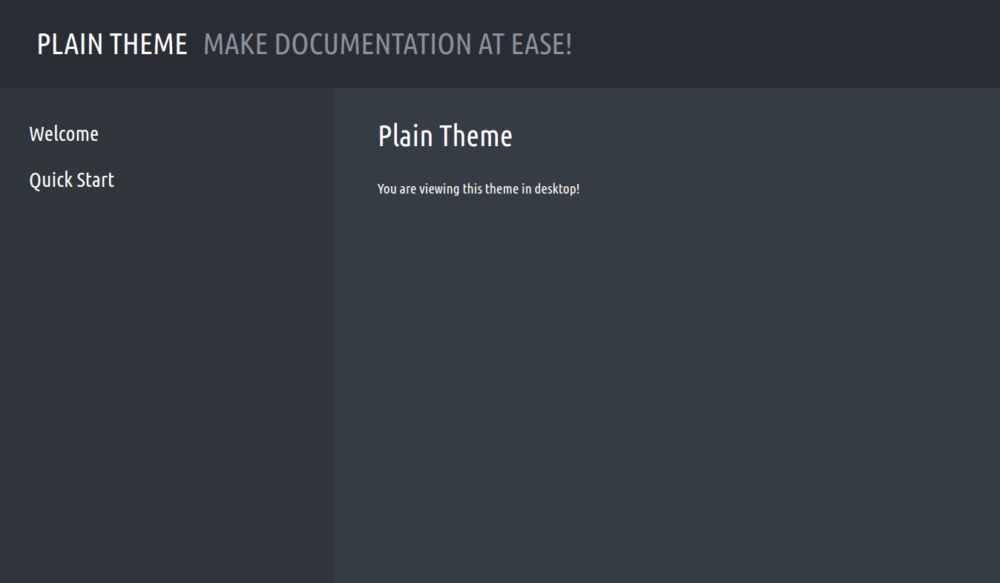
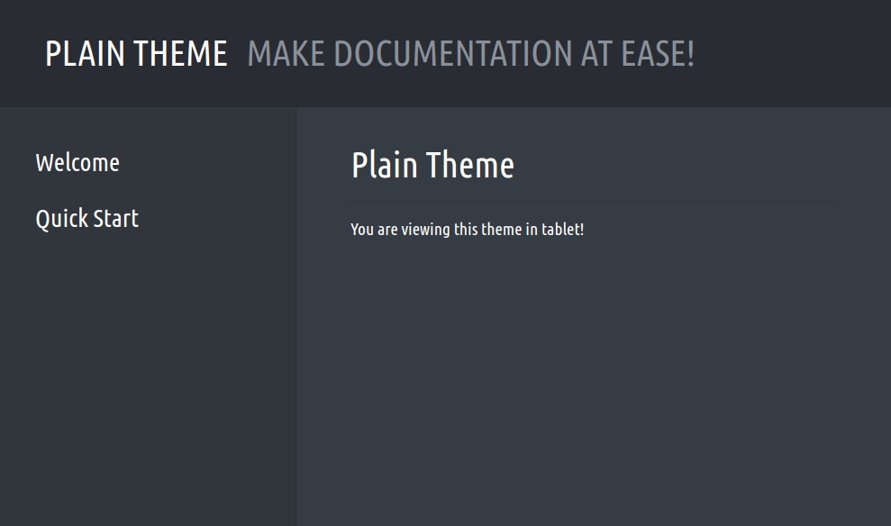

Using the Theme
With our theme finished and installed, we can scaffold a new Fluorite project using the command fl new theme-test. Then cd into the project and update the flconfig.json with the following configuration:
flconfig.json:
{
"title": "Plain Theme",
"basePath": "src",
"rootContent": "index.md",
"outputDir": "dist",
"blueprint": [
{ "title": "Welcome", "content": "welcome.md" },
{ "title": "Quick Start", "content": "quick-start.md" }
],
"themeOptions": {
"subtitle": "Make documentation at ease!",
"favicon-ico": "src/assets/theme/favicon.ico"
},
"rendererOptions": {
"multiPage": true,
"theme": "plain",
"flavor": "dark"
}
}Let's also test our theme's responsive Markdown feature by adding a new Markdown file:
/src/index.md:
<!-- responsive: desktop -->
You are viewing this theme in desktop!
<!-- /responsive -->
<!-- responsive: tablet -->
You are viewing this theme in tablet!
<!-- /responsive -->
<!-- responsive: mobile -->
You are viewing this theme in mobile!
<!-- /responsive -->And finally, let's build the documentation and serve it on localhost:6001 by running the following commands inside the project directory:
fl build
fl serve -wIf you visit localhost:6001, you would see the theme in action with some responsive content:

